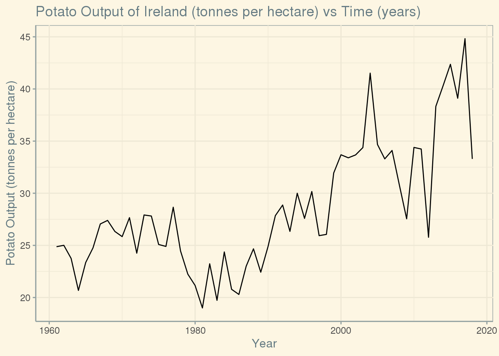
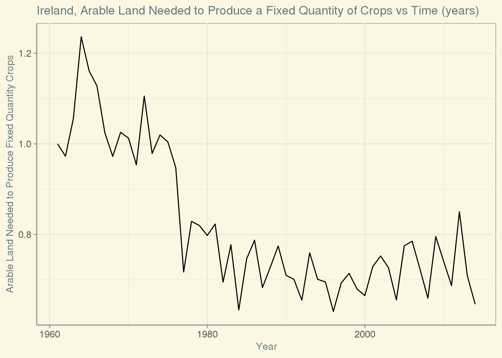

library(here)
library(ggplot2)
library(tidyverse)
library(readxl)
library(ggthemes)
knitr::opts_chunk$set(echo = FALSE, tidy = TRUE)
key_crop_yields <- read_csv(here::here("data", "tidytuesday","data","2020","2020-09-01",
"key_crop_yields.csv"))
fertilizer <- read_csv(here::here("data", "tidytuesday","data","2020","2020-09-01",
"cereal_crop_yield_vs_fertilizer_application.csv"))
tractors <- read_csv(here::here("data", "tidytuesday","data","2020","2020-09-01",
"cereal_yields_vs_tractor_inputs_in_agriculture.csv"))
land_use <- read_csv(here::here("data", "tidytuesday","data","2020","2020-09-01",
"land_use_vs_yield_change_in_cereal_production.csv"))
arable_land <- read_csv(here::here("data", "tidytuesday","data","2020","2020-09-01",
"arable_land_pin.csv"))If you have eaten at any point in your life, you may find this data analysis interesting. For this project I am examining the Global Crop Yields data set contained in 5 different csv files on the Tidy Tuesday website. The definitions for each variable were taken from the Tidy Tuesday Global Crop Yields website. The data set is split up into five smaller data sets about arable land, fertilizer, crop yield, land usage, and tractors. I will be using the data about crop yields, arable land, and tractors to see how agriculture in Ireland has changed over time and if it is for the better. I chose to focus on Ireland specifically because I have roots from there and they are well known for their love of potatoes. I wish to examine how the number of tractors affected population growth, how many potatoes Ireland produces, and how efficient Ireland has become in it’s farming process.
All 5 data sets can be combined to show the full potential of this information at our disposal. But, there are discrepancies in the format between tractors and land use to the other three so they have to be separate. Below is an example of what one line would look line when the sets are complete. For this analysis we will be using the output of potatoes, the entity Ireland, the arable land crop ratio, year, total population, and tractors to arable land ratio.
If we look at the data specifically for Ireland we can notice that the data available does not go as far back as other countries. Ireland’s data starts at 1961 and can go to 2005, 2014, or 2018. The date the data ends at has no apparent reason for why it does so. So, when we look at the data it is important to only grab the data past these dates, otherwise there would be a lot of blank slots involved.
## # A tibble: 1 x 17
## Entity Code Year `Arable land ne… `Cereal yield (… `Nitrogen ferti…
## <chr> <chr> <dbl> <dbl> <dbl> <dbl>
## 1 Afgha… AFG 1961 1 1.12 NA
## # … with 11 more variables: `Wheat (tonnes per hectare)` <dbl>, `Rice (tonnes
## # per hectare)` <dbl>, `Maize (tonnes per hectare)` <dbl>, `Soybeans (tonnes
## # per hectare)` <dbl>, `Potatoes (tonnes per hectare)` <dbl>, `Beans (tonnes
## # per hectare)` <dbl>, `Peas (tonnes per hectare)` <dbl>, `Cassava (tonnes
## # per hectare)` <dbl>, `Barley (tonnes per hectare)` <dbl>, `Cocoa beans
## # (tonnes per hectare)` <dbl>, `Bananas (tonnes per hectare)` <dbl>## # A tibble: 1 x 8
## Entity Code Year `Cereal yield i… `Change to land… `Total populati…
## <chr> <chr> <chr> <dbl> <dbl> <dbl>
## 1 Afgha… AFG 1961 100 100 9169000
## # … with 2 more variables: `Tractors per 100 sq km arable land` <dbl>, `Cereal
## # yield (kilograms per hectare) (kg per hectare)` <dbl>My first question is, how does Tractors per 100 sq km arable land affect Total population over time in Ireland? Is there a clear trend that the number tractors affect population growth? To answer this I used the tractors data set, and filtered for the years past 1961 since those are the years with available data. Then I created two graphs, the tractor to arable land ratio over time and the population over time in Ireland and stacked them on top of each other to compare them. What I noticed is that both graphs have similar sections of increasing and decreasing slop up until 1995, from there the tractor ratio continues to decrease while population increases. It think that more tractors mattered more for food production from 1961 til around 1995. It is possible that the wide spread implementation of GMO crops and irrigation made less tractors necessary for more food. So before 1995 in Ireland to make more food more tractors were needed to support a bigger population. But, after 1995 new technology allowed better crop production while needing less tractors. One problem with the data is that the tractor ratio data only goes up to 2005,while the population goes all the way to 2019. So, not having that data could blind us from being able to see any other interesting trends about how much new technology cut down on the need for tractors.
My second question is, how has the output of potatoes been affected in Ireland from 1961 to 2018? What years had the highest and lowest potato production? To answer this I used the key_crop_yields data set and selected Ireland as the country and the years past 1961. Then I to graphed the output of potatoes vs time in years as a line graph. The exact years that had maximum and minimum potato output were unclear, so I had to take the same data set and arrange it in descending order. From there I used head to get the max potato output and tail to get the min potato output and their associated dates. So, from the graph we can tell that potato production since 1961 has had a lot of booms and busts. The best year for potato output in Ireland was 2017 with 44.8 tonnes per hectare, but as can be seen right after that it tanked. The worst year for potato output was 1981 with a measly 19 tonnes per hectare, but from there there was a general upward trend in production. I didn’t know that potato farming could be so volatile. The biggest problem I have with this data is that it doesn’t go back very far. I would have liked to have seen how the production of potatoes sank during 1845-1849, an event took place known as the potato famine. That famine is what led a lot of Irish people to immigrate to the US. That famine is a great example of how you should never put all your eggs in one basket, because there might be a blight and you’ll have nothing else to eat and be forced to immigrate to another continent. Crop failures are still tragic today, but we have many other foods that we can substitute in our diet when that happens.

## # A tibble: 1 x 2
## Year `Potatoes (tonnes per hectare)`
## <dbl> <dbl>
## 1 2017 44.8## # A tibble: 1 x 2
## Year `Potatoes (tonnes per hectare)`
## <dbl> <dbl>
## 1 1981 19My third question is, how efficient has Ireland become with producing crops on arable land since 1961? To answer this I needed to use the arable_land data set and use the Arable land needed to produce a fixed quantity of crops ((1.0 = 1961)). The data only began to be recorded after 1960, so the starting point will be 1961 and the end point will be 2014. Then I made a line graph of the variable previously noted over those years and looked for any trends. Overall, the land efficiency of growing crops in Ireland increased from 1964 to around 1980 and has mostly fluctuated around the same area ever since. I believe that the reason for this efficiency could be because of better weather, better infrastructure like irrigation systems, and genetically modified crops that require less water. Also, the GMO crops could prevent crop failures since they can be more resilient to the elements and insects. The main problem I have with the data is that it doesn’t include the dates which had crop failures. We could assume that an increase in the land required would mean a failure of some sort but it could also be attributed to other factors. So, having a little more specificity about the dates would be helpful to narrow down why the data moves the way it does.

In the end, we have dissected the Irish agricultural landscape to find that Ireland’s reputation for loving potatoes is well deserved. Since 1961, Ireland has become much more efficient at producing potatoes and has increased the amount they produce drastically. Also, the number of tractors did provide a boost to the total population up to around 1995, because more food means a higher possible total population. Overall Ireland is a bit of a microchasm for the world, but with a major love for potatoes. As technology increases farm output can become more efficient and produce more food which can lead to a healthier and more numerous population.